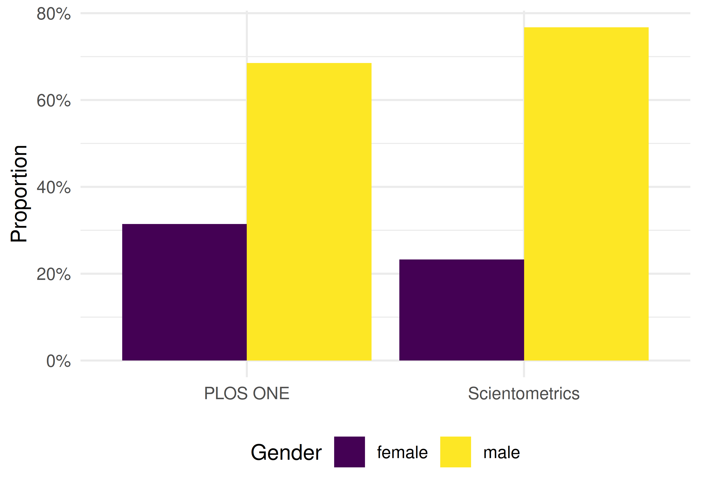
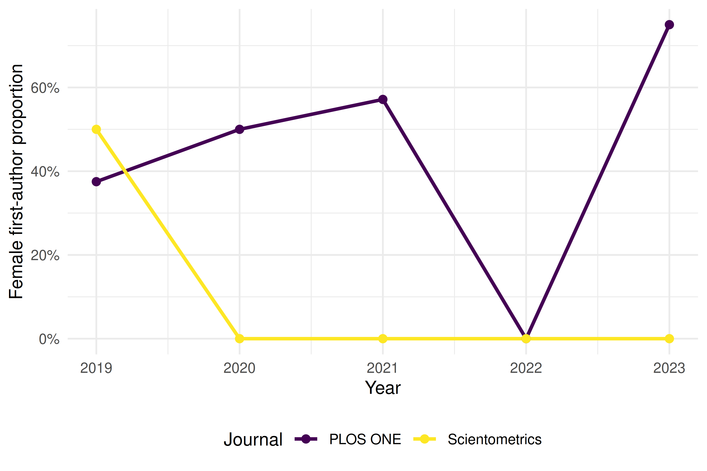

42 Case Study 4: Gender Gap in Scientific Publishing
42.1 Objective
Compare gender representation in authorship across a biomedical journal and an information-science journal, demonstrating both the methods and their substantial limitations.
42.3 Data acquisition
works_sciento <- oa_fetch(
entity = "works",
primary_location.source.id = "S148561398",
from_publication_date = "2019-01-01",
to_publication_date = "2023-12-31",
type = "article",
options = list(sample = 300, seed = 42)
) |> mutate(journal = "Scientometrics")
works_plos <- oa_fetch(
entity = "works",
primary_location.source.id = "S202381698",
from_publication_date = "2019-01-01",
to_publication_date = "2023-12-31",
type = "article",
options = list(sample = 300, seed = 42)
) |> mutate(journal = "PLOS ONE")
works_all <- bind_rows(works_sciento, works_plos)42.4 Gender inference
common_female <- c("maria", "anna", "li", "sarah", "jennifer", "jessica",
"elena", "nina", "laura", "julia", "diana", "sandra",
"lisa", "emily", "rachel", "amy", "kate", "megan")
common_male <- c("john", "david", "michael", "james", "robert", "peter",
"mark", "thomas", "paul", "daniel", "andreas", "martin",
"chris", "matthew", "andrew", "william", "kevin", "brian")
authors <- works_all |>
select(work_id = id, journal, authorships) |>
unnest(authorships, names_sep = "_") |>
group_by(work_id) |>
mutate(
n_authors = n(),
position = case_when(
row_number() == 1 ~ "first",
row_number() == n() & n() > 1 ~ "last",
TRUE ~ "middle"
)
) |>
ungroup() |>
mutate(
first_name = str_to_lower(str_extract(authorships_display_name, "^\\S+")),
gender = case_when(
first_name %in% common_female ~ "female",
first_name %in% common_male ~ "male",
TRUE ~ NA_character_
)
) |>
filter(!is.na(gender))
cat(glue("Classified authors: {nrow(authors)}\n"))#> Classified authors: 22142.5 Gender representation by journal
authors |>
count(journal, gender) |>
group_by(journal) |>
mutate(pct = n / sum(n)) |>
ggplot(aes(x = journal, y = pct, fill = gender)) +
geom_col(position = "dodge") +
scale_y_continuous(labels = scales::percent) +
scale_fill_manual(values = palette_sci(2)) +
labs(x = NULL, y = "Proportion", fill = "Gender") +
theme_sci()
Figure 42.1: Gender representation by journal.
42.7 Temporal trends
first_authors <- authors |>
filter(position == "first") |>
mutate(year = year(as.Date(paste0(
str_extract(work_id, "\\d{4}$"), "-01-01"
))))
works_all_year <- works_all |>
transmute(work_id = id, year = year(publication_date))
first_authors_year <- first_authors |>
select(-year) |>
left_join(works_all_year, by = "work_id")
first_authors_year |>
group_by(journal, year) |>
summarise(female_pct = mean(gender == "female"), .groups = "drop") |>
ggplot(aes(x = year, y = female_pct, colour = journal)) +
geom_line(linewidth = 1) +
geom_point(size = 2) +
scale_y_continuous(labels = scales::percent) +
scale_colour_manual(values = palette_sci(2)) +
labs(x = "Year", y = "Female first-author proportion", colour = "Journal") +
theme_sci()
Figure 42.3: Proportion of female first authors by year.
42.8 Key findings
- Persistent gap: Male names are overrepresented in both journals, particularly in last-author positions.
- Disciplinary differences: The gender balance differs between journals, likely reflecting field-specific demographics.
- Temporal progress: Some evidence of increasing female representation over time, but trends are noisy due to small sample sizes.
42.9 Critical caveats
These results must be interpreted with extreme caution:
- Name-based inference enforces a binary that excludes non-binary researchers.
- Coverage is biased: names from East Asia, South Asia, and Africa are poorly classified.
- The unclassified names are not random — they are systematically different from classified names.
- This is a methodological demonstration, not a definitive study. Production gender analysis requires validated tools with confidence scores and country context (Larivière et al. 2013).
This book was built by the bookdown R package.